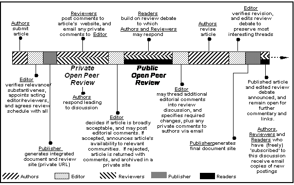

DEJA: A Year in Review
Report on the Planning Year Grant
For the Design of a Dynamic E-journal Archive
Presented by:
Patsy Baudoin, DEJA Project Manager, MIT Libraries
MacKenzie Smith, Associate Director for Technology, MIT Libraries
To:
The Andrew W. Mellon Foundation
30 May 2002
Archiving Scholarly Journals
Microsoft Reader Ebook version
EXECUTIVE SUMMARY
INTRODUCTION
The MIT Libraries proposed to the Mellon Foundation to plan a preservation archive for dynamic electronic journals — DEJA (Dynamic E-Journal Archive) — that would be reliable, secure, enduring, and sustainable over the long term. The Foundation's own request for proposals had previously laid out that it was interested in preserving the wealth of research electronic journals currently available to the scholarly community before it was too late.
STATEMENT OF THE PROBLEM
The Mellon Foundation and librarians know that e-publications are at risk. Many electronic journals won't survive the vagaries of business bankruptcies and mergers nor technology's obsolescence and failures. Knowing this, the Mellon Foundation has challenged its library-grantees to protect the peer-reviewed research that is published on the Web in electronic journals, but effective archiving of electronic materials raises all sorts of challenges. Besides the technological hurdles, there are many organizational, policy, and managerial problems. Legal questions as well as educational and cultural issues emerge as some of the most difficult areas to change to enable a smooth transition to archiving electronic journals and an uninterrupted continuation of service to a library's patrons.
METHODOLOGY
Our strategy was first to investigate the MIT Press's own scholarly publication site in cognitive science, CogNet.[1] From there we scoured the world of electronic journals to understand more precisely what aspects of electronic journals made them dynamic and what sorts of provisions — repositories, tools, standards, and practices — could be used, built, and established to archive their content for the long term.
CONCLUSIONS
We arrived at two major conclusions.
- By January 2002, it had become evident that there were not enough scholarly dynamic e-journals to satisfy the Mellon Foundation's stated wish to archive quantities of content. We could not justifiably propose to build a dynamic e-journal archive with only a dozen or so e-journals, however valuable these might be. We turned our attention to the more immediately pressing issues of archiving the e-journals of small publishers whose specific problems were not being addressed by other Mellon Foundation grantees and which would include the dynamic e-journals we had been interested in archiving in the first place.
- Web technologies enable new kinds of publishing and influence how the results of scholarly research are communicated. In articles we begin to see the inclusion of primary research material and the use of multimedia or other non-textual techniques to convey results. In journals we see the displacement of traditional concepts, such as "issues" being replaced by rapidly changing Web sites of subject-based content. As scholars and publishers become more familiar with and confident in the opportunities presented by the Web, use of these technologies will increase. However, research in methods of capturing and preserving this type of material is not keeping pace, thus threatening our ability to archive such publications for the future. Research in digital preservation of this type of material is becoming a critical need.
PRESERVING DYNAMIC ELECTRONIC JOURNALS
1. What is a dynamic electronic journal?
Dynamic electronic journals are often defined as e-journals in which the content changes frequently. In reality, this is not yet happening much. E-journals may publish articles as they are ready, without waiting for a whole issue's worth of articles, but this change is sequential addition. Having arrived at this conclusion early in our investigation, we looked at a definition of dynamic e-journals, namely those that contain moving elements or make elements move.
- Moving elements include, for example, audio and video clips as well as animations. Because moving elements are not printable, libraries can no longer rely on printing the e-journals as a primary preservation strategy.[2] Microfilm and microform are likewise static and cannot accommodate moving elements either. We will refer to these as "dynamic elements."
- E-journals that can make elements move typically include embedded software that enables movement, or scripts and programs that render content on the fly. We will refer to this sort of dynamism as functionality.
Because one cannot print dynamic e-journals to preserve them, the task at hand is to define new ways of preserving content that makes no sense without these constituent, dynamic aspects. While we know how to catalog, index, and retrieve moving files, we must refine this cataloging since the elements are embedded in more readily cataloged articles. Cataloging, indexing, and retrieving the kind of content that cannot be rendered without interactive functionality are particularly vexing hurdles, especially if the content changes with every user's instantiation of that content. Interactive functionality manifests in many ways, some of which will be illustrated below when we discuss specific electronic journals.
Many questions complicate the preservation of dynamic and interactively functional content:
- In what format are these bits best preserved?
- What sorts of metadata do we need to insure their easy recovery?
- What measures can be taken against data corruption (bit rot) or loss of data interpretability?
- Does software need to be preserved to insure that the saved bits can be rendered? If so, which software and how can we preserve it?
- In an article with audio and film clips, how do we preserve the order and placement of each individual file within the broader text file?
Dynamic electronic journals are a natural outgrowth of Internet and Web technologies. The electronic journals we will be discussing are Web-native: they were born in Web environments and are meant to be rendered and displayed in current Web environments. However we preserve them, for the time being they must also be Web accessible. In the future, it is likely that electronic material will be rendered in other digital (and perhaps even non-digital) environments.
2. What content should be preserved?
Of course, besides dynamic elements and functionalities, dynamic e-journals contain text and other intellectually significant elements. The following list delineates several categories of "preservables" about which decisions of inclusion or exclusion must be made at the outset of the archiving process in order to know what to ask publishers to submit to the archive:
- Content — intellectual content, including research and so-called supplementary materials
- Structure — the relationship among items and all of their embeddings
- Processes — basic Web functionalities (e.g., CGI scripts)
- Visual Aspects — look and feel, layout, etc., in contrast to dynamic files like audio, video, and animated content
- Linkages — internal and external hyperlinks which raise important structural questions as well as copyright issues
- Interactivity — dynamic functionality
What we archive must be accompanied by the requisite types of metadata that will make it possible for future generations of scholars and researchers to obtain access to the archived materials: descriptive, representational, technical, and administrative metadata at the very least.
We have assumed the long-term preservation of e-journals will require a large repository, replete with ingest functions, search engine, and display mechanisms. In order for a digital store of this magnitude and complexity to be accessed many years from now, we further assumed, it would have to be exercised, that is, put to use to verify the data's integrity, to insure the functioning of all mechanisms and the usefulness of the metadata, etc. As directed by the Mellon Foundation's request for proposals, we undertook a thorough analysis of the Open Archival Information System (OAIS) reference model and we ascertained that our e-journal archive could reliably live in the MIT-DSpace infrastructure.[3]
3. What preservation strategies exist?
The literature about preservation currently reflects several preservation strategies.
Archives may preserve bits "blindly" and rely on digital archaeologists of the future to piece documents and software back together. To address some of the risks data run — such as fragility and decay — data refreshing from time to time seems essential. Unfortunately, the unpredictable timing of software and hardware obsolescence, among many other unforeseeable risks and events, spells doom for most material early on in its history. This solution is hardly proactive and begs for alternatives.
Avoiding this archaeological approach leads to thinking more in depth about emulation and migration as more viable preservation strategies.[4] Emulation entails imitating or recreating a software environment so that programs and preserved data appear to run natively. This preservation strategy would appear to lend itself to capturing the dynamic nature of the electronic journals under our consideration, but at this time the long-term feasibility of emulation — what it would take to make it work reliably as a preservation method — is hotly contested.[5] Still, given the dynamic specificities of the content at issue in dynamic e-journals, it may be necessary to investigate further the precise ways in which emulation can and cannot be used to preserve dynamic functionality, if not dynamic elements.
Migration currently seems to be the preservation strategy of choice, principally because it is the only and last-resort method in actual use. This approach is recommended for all digital objects one wants to prevent from falling into disuse. Ideally, a migration policy lays out when and how to transfer data, but knowing when and how to migrate data is only the first in a series of challenges in managing data migration over the long term. The most important downside of migration as a preservation strategy is inevitable data loss. In addition, each digital archiving system will have to document its history and processes, create metadata, and otherwise track the many and constantly growing numbers of versions of any give file or dataset. The urgency of solving the nexus of versioning problems will emerge with the first series of migrations.
All the same, since the interruption of vendor support is a common trigger for migrating data, as are software and hardware obsolescence, migration seems suitable to trying to ensure bit streams survive. It is questionable, however, if migration will be enough to maintain usable environments upon which dynamic functionalities rely to render content usable.
Regardless of the preservation method chosen, at-risk data themselves are best preserved in software-independent formats like SGML or XML for text and metadata. Other common archivable formats are emerging for still image and graphics files (TIFF, JPEG) or video (MPEG, SMIL). It remains to be seen what formats can best be used to enhance the likelihood of preserving such dynamic functionality as programs.
THE CHANGING LANDSCAPE
Authors want more and more to take advantage of what the Web can offer in the way of functionality. Scientists, for example, devise software to carry out and report on their experiments, so it is not surprising to find them asking publishers with increasing frequency to publish software that is incorporated into their articles, software that must be used to understand the research at hand. If not preserved the science it helps report will also be partially lost.
E-publishers engaged in providing Web instantiations of their print journals report being reluctant to incorporate dynamic functionalities which are expensive propositions in large measure because of their discipline-based varieties. Publishers also appear reluctant to go down this path until print versions become a thing of the past. They indicate they would do away with print except that librarians insist they not dismiss it until we know better how to preserve electronic publications.
DYNAMIC ELECTRONIC JOURNALS
The Misleading Case of CogNet
We introduce CogNet into this discussion here because it was a telling starting point to our year of planning. As will become clear, CogNet is not an e-journal but our careful analysis of it yielded a number of clarifying issues, not the least of which involves the importance of copyright.
CogNet is an MIT Press scholarly communication site for the brain and cognitive science community. As expected, working with an "in-house" publisher-partner helped sort out many technical, business, and legal issues. The Press articulated concerns, explained procedures, and generally offered instructive and insightful perspectives on publishing scholarly materials on the Web. In our proposal to the Mellon Foundation we claimed that CogNet represents a new breed of electronic publication: a site for publishing journals as well as for building community around these journals. In addition to CogNet, our proposal named other such e-communities, namely Columbia International Affairs Online (CIAO) and Columbia Earthscape of the Electronic Publishing Initiative at Columbia (EPIC).[6] Each of these maintains its respective discipline's highest standards by publishing peer-reviewed research. Because of the similarities, we looked into both CIAO and Earthscape and traveled to New York City to discuss Columbia's set-up and processes. In the end, however, we decided not to include the two EPIC publications in DEJA.
CogNet is a forward-looking site, but it is not an electronic journal. CogNet, in addition to offering many ancillary services to its community of scholars, brings together monographic and serial publications, all with their own editorial boards. These publications include several MIT Press books, four MIT Press peer-reviewed journals, and a host of international, peer-reviewed journals published by other publishers. DEJA's CogNet archiving rights are limited to those owned by the MIT Press. To clear the rights to archive all of the journals in CogNet, it was soon clear, would be a Herculean task that would introduce another set of hurdles to the already complex rights management needs DEJA would be facing. Working with CogNet-like portals, as they might properly be called, provides the illusion of working with a single publisher. In reality, once the rights were cleared, data ingesting processes and procedures would still have to be worked out with each and every publisher individually.
A portal like CogNet feels dynamic as an effect of the hyperlinks. This is what makes for one aspect of the dynamic feeling of all Web experiences. However, as a complex directory it is but a secondary publisher of scholarship, even of the materials copyrighted by the MIT Press that exist in print.
The Dynamic E-Journal as Experiment
We next turned to dynamic electronic journals as defined above. Some of the e-journals we encountered were prime candidates for inclusion in our projected archive because of all we assumed about the value of their peer-reviewed intellectual content. Most of these journals are already at risk and worth preserving simply because it appears they may not be around very much longer. Some may consider currently at risk e-journals soon-to-be-failed experiments, with runs not long enough to invest in, but in many cases these are e-journals that took trailblazing risks by implementing innovative dynamic technologies and by putting in place technologically-driven processes which open both the academic and publishing worlds to new futures. Not archiving these electronic journals means not only losing valuable content, however little of it there may turn out to be on an e-journal by e-journal basis, but more importantly, losing them as significant experiments that future historians of scientific writing, Web publishing, and Web technologies, among others, will sorely miss.
Dynamic Content-Mapping
We looked at journals that use hyperlinked maps as their navigation platform on the assumption that the maps not only were the key to accessing intellectual content, but also themselves represented intellectual content.
Journal of Artificial Intelligence Research. JAIR (online at http://www.infoarch.ai.mit.edu/jair/jair-space.html) offers the JAIR Information Space to guide its users through part of its journal.[7] Mark A. Foltz conceived and implemented the JAIR Information Space as part of an MA thesis in one of MIT's artificial intelligence labs. The content mapping technique it uses lays out material in a way that conveys its own meaning, so that "easy judgments can be made about the relative distribution of articles among topics."[8] The JAIR Information Space also offers a dynamic "details-on-demand" feature that "displays an article's full bibliographic entry and excerpt of the abstract when the pointer is moved over the corresponding article-icon."[9] The JAIR Information Space is a rare and successful effort to map content and provide visual meaning according to discipline-specific standards and nomenclature.
The project, which opens onto a specific set of the journal's issues, ended when Foltz's doctoral studies took him in another direction. His contributions to content visualization in electronic journals — both the Information Space at JAIR and his documentation — may well be worth preserving for future researchers.
The Astrophysical Journal. Users gain open and free access to the Astrophysical Journal via the University of Strasbourg (at http://simbad.u-strasbg.fr/ApJ/map.pl) by clicking deeper and deeper into maps. Clicking on a map dynamically generates the next-level map, and so on, until the system displays the requested article. The maps are dynamically generated and visually represent topical relationships. It seemed at first there was no other way into the journal's content, which is indeed the case at this URL. We learned later, however, that most astronomers and astrophysicists around the world still access the Astrophysical Journal's contents (also at no fee) via the Astrophysics Data System (ADS) site at Harvard,[10] where users must slog through a rather unfriendly, but more conventional, pre-Web-looking approach to content. The user-friendly University of Strasbourg interface may be a harbinger of things to come.
Dynamic Editorial Process
Most e-journals, precisely because they are born of an all-print environment, remain tied to print preparation processes. They rely on well-established procedures to take an article through its life cycle, from its authoring to its publication. By now many publishers have introduced email as the primary means of communicating and transferring data, but few use the Web as an administrative-editorial platform. Those who do tend to be electronic-only publishers and they are instituting new and exciting new practices.
JIME, the Journal of Interactive Media Education (http://www-jime.open.ac.uk), has been a pioneer in several regards.[11] JIME's primary audience comprises education technologists and it uses their disciplinary expertise to develop the e-journal site. For the JIME editors, "knowledge construction" is an iterative and collaborative process. Inasmuch, the scholarly debate does not start with publication but early in the peer review process. To this end, JIME developed and implemented the Digital Document Discourse Environment (D3E), software enabling a document-discussion-anchored publication to emerge. The decision to use this software as a backbone has broad ramifications that reach beyond the process-oriented exigencies it satisfies technologically.
This platform fosters scholarly debate at all stages in the life cycle of an article. As is made clear in the diagram below, during and after the Public Open Peer Review phase, readers, authors, and reviewers may all take part in a discussion that builds on the earlier, private open peer-review.[12]
Working at any stage on the e-journal site, authors, editors and reviewers invoke the Web's capacity to streamline the editorial and review processes by relying on its dynamic, functional interactivity. We found no other electronic journals that have taken on this collaborative aspect of e-publishing as radically as JIME.
It is worth noting that while e-journals and other scholarly e-community sites have generally failed in their attempts to establish threaded discussions, JIME appears to have a critical mass of such activity, owing in part to its enabling interactive software. This e-journal is available at no cost.

peer review phases, and the active stakeholders at different points.[13]
Dynamic Elements: Audio, Video, and Multimedia
The use of thumbnails (small image files) as clickable links to still images is common in many disciplines. The thumbnail serves several functions. Perhaps most importantly, a thumbnail graphic can be transmitted to a browser far more efficiently than its larger counterpart. Secondly, a thumbnail provides both a tease and a glimpse of what the authors have to display with their texts.
The prevalence of thumbnails and the myriad ways they are used can be gleaned from glancing at any number of e-journals. Architronic: The Electronic Journal of Architecture (http://architronic.saed.kent.edu), Conservation Ecology ( http://www.consecol.org/Journal), and Earth Interactions ( http://earthinteractions.org) illustrate the varieties of visuals that appear as thumbnails: pictures, graphs, pie charts, data tables, drawings, etc. Alan Dodson's "Performance and Hypermetric Transformation: An Extension of the Lerdahl-Jackendoff Theory" appears in Music Theory Online (http://www.societymusictheory.org/mto/issues/mto.02.8.1/mto.02.8.1.dodson.html). Viewable with or without frames, access to images and audio clips are easy and numerous.
The Interactive Multimedia Electronic Journal of Computer-Enhanced Learning (IMEj of CEL) (http://imej.wfu.edu) is, not surprisingly given its purpose, replete with examples of static and dynamic visuals of all sorts. To know at a glance what each article might include in the way of non-text media, scroll through any article: iconic indicators with short captions appear in the right-hand margin. For example, an article entitled "The Biology Labs On-Line Project: Producing Educational Simulations That Promote Active Learning," by Jeffrey Bell of California State University[14] includes just under a dozen QuickTime video clips and at least as many thumbnails, still shots, graphics, and/or screenshots. In one instance, the caption reads "A QuickTime movie (533 KB) showing how the DemographyLab works." In another article, entitled "Learning Greek with an Adaptive and Intelligent Hypermedia System," a caption-less icon indicates where the reader may view an online demonstration that runs in Shockwave, an easy to download plug-in. There are movies of screenshots that demonstrate how software works to help students flag grammatical or word order errors in their work.
In some electronic journals, dynamic non-text elements often end up as "supplementary material." Since one cannot print film and audio clips or multimedia of any sort, supplementary materials typically grace e-journals with print editions. The decision to include multimedia as a separate file provides the publisher an opportunity to highlight multimedia content and thereby promote and market the e-journal as desired. A simple example of this occurs at Optics Express. The e-journal's home page (http://www.opticsexpress.org) teases the reader with an animated image and a caption that includes a link to information about a current related article. By following the link, the reader can then access both a PDF version of the text of the article and the separately presented multimedia element.
Since 1998, a subscription to the Computer Music Journal, published by the MIT Press, includes an annually produced CD-ROM of music and sound related to the articles the e-journal has published in the course of the year. One can also purchase the CD-ROM separately. The e-journal itself seems devoid of music and sound files.
In the humanities and the arts especially, readers may come across multimedia applications that offer artistic depth or breadth in support of the content at hand, sometimes nearly stealing the show! Such is the case in one Postmodern Culture article on filmmaker Dziga Vertov's Kino-Eye.[15] A pulsing eye-camera lens greets the reader with visual echoes of the topic at hand. The image's caption reads, "Animated image constructed by author [Joseph Christopher Schaub] using Man With a Movie Camera production stills."
The Journal for MultiMedia History (http://www.albany.edu/jmmh), published by the Department of History at the University of Albany, is a most interesting example of multimedia-enhanced research because its practice demonstrates how paradigms can shift rather easily and to useful ends. JMMH did not adopt the publish-as-needed model that Web technologies make possible and that most electronic-only journals embrace. Instead, it publishes a single issue per year; it also breaks with the traditional article or text-centered approach to journal publishing. For example, the feature article of the 2000 issue introduces the documentary photographer George Harvan.[16] This entry comprises a database of the photographer's images, a set of interviews to read or listen to via audio files, and a handful of historical essays with their attendant reference links. The three-part entry does not bear the shape of a classic article — although JMMH has chosen to call these multi-part entries such — nor is it conceived as a book. Presumably, additions to any part of it may be added at any time. The power of the JMMH site stems from its soundness as scholarship, wielding as it does ample, well-managed resources in miniature repository-like entries that individually and collectively command intellectual presence and value.[17] The site privileges neither text over image, nor text over database; instead, each piece articulates depth and stands up to the tests of rigor.
Dynamic Functionality
Among those concerned with how we will preserve our peer-reviewed heritage, there is little doubt that preserving dynamic functionality is the highest obstacle to overcome. Dynamic elements and their textual kin are files that will be similarly wrapped with appropriate metadata and migrated following whatever policies might be put in place. Unlike dynamic elements, however, dynamic functionalities defy simple preservation. Fortunately, as we have learned this year, there isn't too much of it. Authors, publishers, and librarians can imagine doing far more with the current available technologies than is actually being done.
Required Plug-ins
All journals presenting materials in the Portable Document Format (PDF) require users to download Adobe's Acrobat Reader, a common and easily accessible plug-in. E-journals often require downloading other plug-ins. Many e-journals in chemistry and chemistry-related disciplines, for example, make use of Chime, an increasingly common plug-in that enables readers to view and manipulate representations of chemical compounds.
The Journal of Insect Science (JIS) is a faculty-library collaboration at the University of Arizona, available only online, free of charge (http://www.insectscience.org). In "A Call for Change in Academic Publishing," editor Harry Hagedorn presents his concern for the untenable rates imposed on libraries who want to subscribe to the journal he had previously edited.[18] Like rivulets plowing new beds, e-journals, thanks to Web technologies, are sprouting new business frameworks, sometimes with concomitant new business models. To make its way among the journals in this field and to offer solace to those whose professional future depends upon being cited, the journal seeks visibility through inclusion in Chemical Abstracts, Agricola, CAB and BIOSIS.
JIS files are SGML- and XML-formatted, enabling not only structured access to documents but extractions across documents as well. Contents are displayed in PDF if the content is static. Since JIS encourages its authors to submit multimedia elements (e.g., color images, graphs, and diagrams; video and sound files; internal and external links; and datasets), some plug-ins may be required to make sense of the content. For example, to illustrate the principles of phylogenic reconstruction, MacClade or PAUP software might need to be used within an article.[19]
Personalization Tools
Some customization tools can serve several purposes. Tools such as alerting services that send emails with news about newly published articles and other content-related events promote the use of the e-journal's site, but do not directly influence content delivery or usability. Other tools affect the content more directly and beg for ways to be preserved.
The Internet Journal of Chemistry. IJC (http://www.ijc.com) explores the potential Web technologies offer. The journal's files are not stored as PDF or HTML files, but instead are served up dynamically or on-the-fly. It offers the most straightforward and unencumbered testing ground for researching on-the-fly generation of scholarly content. In addition, approximately seventy-five percent of the articles contain interactive elements.[20] IJC editor Steven Bachrach, who engages the help of students to manage conversions and production, likes authors to be able to submit materials in their preferred formats,[21] thereby increasing the likelihood that readers will have to download appropriate plug-ins to ensure that all content can run as intended.
In addition to lifting constraints on authors who may want to take full advantage of new technologies, IJC offers readers an extensive range of customization preferences that complicate the task of preserving content. IJC includes tools for readers to control layout, fonts, and color schemes. Readers can decide where to display footnotes (low on the page or in a floating window); they can create annotations and then decide whether to view these annotations within the document's frame or in a floating window. Readers can also personalize formats to view chemical structures a number of different ways: as standard GIF/JPEG images, using links to a data file, as embedded objects, or other options.
The IJC is not alone in offering annotation tools and preferences, but IJC annotations are private. In contrast, the Journal of Universal Computer Science (J.UCS) (http://www.jucs.org) offers readers not only public annotation and comment features but also labeling options (e.g., question, answer, problem, solution, advice, etc.).
Discussion Forums and Threaded Discussions
As pointed out above, the Journal of MultiMedia History removed a threaded discussion feature from its site when it was decided it was unsuccessful. Many e-journal sites include areas where experts discuss published content, but there is little activity and often ill-targeted interventions. Speculation abounds as to why. In contradistinction, JIME's success in this regard may be attributed to its editors' philosophy of initiating open discussion in the early stages of the peer-review process. The British Medical Journal's "Rapid Response" section also appears active and on-topic.[22]
Other Dynamic Functionalities
Some e-journals, besides their worthy content, offer particularly compelling dynamic features and instances of interactivity that simply cannot be found elsewhere in peer-reviewed e-journals. The Journal of Electronic Publishing (JEP) (at http://www.press.umich.edu/jep) is an electronic-only publication that published a single hypertextual article. Its fragmented nature is presumably key to its meaning or at least to the freedom the author wanted readers to experience.[23] Linguistic Discovery (http://linguistic-discovery.dartmouth.edu/WebObjects/Linguistics.woa) specializes in foreign languages that are becoming extinct, which is all the more reason to preserve this brand new electronic-only journal. The fruit of collaboration between Dartmouth faculty members and their library, Linguistic Discovery promises to pose some challenging archival questions depending on how they manage their character sets and alphabets.
Deciding what dynamic functionalities need to be archived will orient future research in this area. Cultivate Interactive (http://www.cultivate-int.org), considered a "Web magazine" because it is not peer-reviewed, displays extensive use of dynamic interactivity. One example worth singling out is a service which provides software for translating articles into major European languages. The University of Chicago Press offers readers far more than keyword searching: they provide a facility to input reference queries to find out how many times and where published articles are cited. HighWire offers cross-publisher searching. How ought we to think about preserving such translation and search algorithms?
The Question of Metadata
Our planning took place knowing that MIT's DSpace initiative would provide the physical infrastructure for "housing" the DEJA archive. Because DSpace implements the Open Archival Information System (OAIS) reference model[24] to handle submission, storage management, preservation planning, and access, our planning also included determining formatting for the OAIS Information Packages: SIPs, AIPs, and DIPs.[25]
As stated earlier, the DSpace system implements the OAIS reference model and so includes an archival storage subsystem. In DSpace, AIPs for digital items are encoded using the Metadata Encoding and Transmission Standard (METS), an emerging standard of the digital library community.[26] METS has also been identified as a reasonable way to encode the SIPs received from publishers, and as a mechanism to support the exchange of DIPs with other archives in the event of an archive closing. METS provides for packaging together the descriptive metadata about the journal (at the issue, article, or other level of granularity), the technical metadata about the component files of the journal (e.g., PDF articles, TIFF image files, MPEG audio/visual files, or even SGML-encoded full text files). It can also model the structure of the journal issue, article, etc. Recently the METS standard has been expanded to support the encoding of complex Web sites using the XLink standard of the World Wide Web Consortium.[27] In METS we have a standardized way to package all the necessary content and metadata together for both exchange and archiving. What we still lack is a sense of what metadata to capture, particularly technical metadata (or OAIS Representation Information) about the dynamic functionality of e-journal content.
Conclusions
The questions raised in the process of preserving dynamic functionality will be similar to those for archiving static content. In both cases, we will have to rely on migrating data and/or emulating systems, but to preserve dynamic functionality we will need to track additional factors and create and maintain more complex and varied metadata.
When we understood that we could not meet the Mellon Foundation's mandate for quantity of significant scholarly content by focusing strictly on dynamic functionality, we decided to expand the scope of our project to include small electronic journals which were, in one way or another, ushering in new processes, techniques, business models, and so on. The dynamic electronic journals at stake in this discussion have in common that they are all relatively small. They have not grown sufficiently yet to outlast the behemoths with whom they compete, but their hope of doing so rests on their ability to innovative with the same or less technology than their bigger rivals.
Our working definition of small has been infrastructurally small. A publisher's various infrastructures make the preparation of materials for archiving more or less burdensome. The small publishers we looked at had little personnel, few financial means, and/or an unsophisticated but serviceable technological infrastructure. To preserve the publications of these small enterprises, special attention needs to be paid to those areas that hamper the publisher's ability to ready resources for submission to the archive.
Small, Somewhat Dynamic E-Journals
As a Scholarly Publishing & Academic Resources Coalition (SPARC) e-journal group that publishes electronic versions of some nearly fifty small- and mid-sized print journals, BioOne offers quantity in addition to quality.[28] In addition, while publishing relatively small publications to make them more accessible, BioOne's publishing systems are quite sophisticated. It serves up mostly static SGML files and metadata from a content management database. BioOne's conversion and production work is outsourced to the Allen Press, whose responsibility it also is to maintain their servers, guarantee back-ups, and so on.
Among the eleven publications of the American Meteorological Society (AMS), Earth Interactions (http://earthinteractions.org) is uniquely electronic-only, although all of the Society's journals are available on the Web.[29] The Society outsources online production to the Allen Press but maintains control of the editorial process. Our decision to work with small publishers made it easy to decide to partner with Keith Seitter and the AMS to archive all of its electronic publications. As a lot, they represent all of the static and dynamic technological problems we would have to address in a first instantiation of the archive, including mathematics symbols, resolution questions for highly differentiated images, some interactivity, and so forth.
Two other SPARC-partnered electronic journals, Algebraic and Geometric Topology (http://www.maths.warwick.ac.uk/agt/) and Geometry and Topology (http://www.maths.warwick.ac.uk/gt/), are among the very smallest e-journals around, but neither of these is dynamic. Both are published by the Mathematics Department of the University of Warwick at Coventry in the United Kingdom. They Web-publish as required and print as needed, owing to their ability to avail themselves of their University's infrastructure. Their most Web-like feature is the availability of multiple formats, not including HTML which cannot display mathematical equations. Both journals are being archived with Paul Ginsparg's ArXiv at Cornell University, for at least ten years.
Finally, the largest and one of the newest (established Summer 2001) electronic-only publishing ventures warrants mentioning precisely because it is the exception.[30] TheScientificWorldJournal (http://www.thescientificworld.com) is the intellectual heart of an extremely rich "scholarly knowledge network" for scientists of many different stripes.[31] Its content, which includes peer-reviewed articles, also makes available research papers, reviews, and other primary research documents which may contain multimedia and dataset-like enhancements to the science being reported. What is striking about TheScientificWorldJournal is indeed the amount of intellectual enhancement the journal takes on as an entire Web site.
Licensing for E-Journal Archives
In a one-day workshop convened on February 25, 2002, with representatives of several small publishers and the DEJA and DSpace teams, we explored the business issues related to archiving the publications of this set of publishers. Since these publishers are either non-commercial or not high-profit-motivated (e.g., SPARC journal publishers), they were, as a group, quite willing to accept licensing agreements that would allow the e-journal archive to make their content available to the public for free in relatively short time frames (e.g., three to five years). They were also willing to consider subsidizing the archives of their publications, like the large commercial publishers working with other Mellon grantees, but do not have the resources to do so without passing the costs back to their subscribers or members (in the case of scholarly societies). Again like the large publishers, they wish to decide how to present such charges to their subscribers rather than having it determined in the license with the archive. The publishers we worked with were uniformly concerned about finding ways to archive their material by third parties. They were less confident of being able to archive their own material for the long-term (unlike the large commercial publishers) and were cognizant of the importance of finding archiving solutions to ensure the long-term viability of their titles.
Final Recommendations
This project has identified that much more research is needed to understand how to preserve dynamic e-journals, including exploring what migration or emulation strategies will be required to preserve the types of dynamic functionality we have defined, what kinds of metadata will be needed to support preservation, how to track migration versions, and so on. It is our hope that such research can, and will, be undertaken soon so this important cultural material is not lost permanently. Doing such research, however, was far outside the scope of the current project. All we can do is identify the areas of most pressing research need: finding mechanisms to preserve dynamic e-journal content (e.g., functional programs, plug-ins, moving content, and so forth); identifying the technical metadata needed to support that preservation; and building cost models for doing such preservation.
Postscript: 2003
The MIT Libraries are not currently pursuing third party e-journal archiving as an active area of research. Our primary efforts have shifted to archiving and preservation of born-digital research material produced by the MIT faculty, flexible metadata support built on Semantic Web technologies, and interoperability across various digital library/archive and course management systems. The MIT Libraries are leading the DSpace Federation, a consortium of research institutions, libraries, and other cultural heritage institutions that are using MITs open source digital repository system (see http://dspace.org). We are also actively involved in the Global Digital Format Registry (GDFR) project, as well as the Metadata Encoding & Transmission Standard (METS at http://www.loc.gov/standards/mets) and the PREMIS Project (PREservation Metadata: Implementation Strategies at http://www.oclc.org/research/projects/pmwg/default.htm).
Update on JIME: The underlying publishing engine has been released as D3E (Digital Document Discourse Environment), a generic tool for others to publish their own e-journals modelled on JIME's infrastructure (see http://d3e.sourceforge.net). D3E underpins the Journal of Co-Counselling (http://www.journal.co-cornucopia.org/), is used for peer review in the NSF-funded Digital Library for Earth System Education (DLESE at http://www.dlese.org/), and by the University Corporation for Atmospheric Research (UCAR) to connect their software developers with their academic user community (http://www.unidata.ucar.edu/community/committees/umada/). A version has also been released with the Open Archives Eprints software from Southampton University, called D3Eprints (http://d3e.sourceforge.net/d3eprints.html).
Endnotes
[1] See MIT's CogNet at http://cognet.mit.edu.
[2] Librarians continually struggle with managing shelf and storage space for print resources.
[3] For detailed information on the DSpace digital repository system see http://www.dspace.org.
[4] For discussions and perspectives on this topic, see David Bearman, "Reality and Chimeras in the Preservation of Electronic Records," D-Lib Magazine 5.4 (April 1999), online at http://www.dlib.org/dlib/april99/bearman/04bearman.html; Margaret Hedstrom and Clifford Lampe, "Emulation vs. Migration: Do Users Care?" RLG DigiNews 5.6 (15 December 2001), online at http://www.rlg.org/preserv/diginews/diginews5-6.html#feature1; and Jeff Rothenberg, Avoiding Technological Quicksand: Finding a Viable Technical Foundation for Digital Preservation, Publication 77 (Washington, DC: Council on Library and Information Resources, January 1999), online at http://www.clir.org/pubs/reports/rothenberg/contents.html.
[5] Hedstrom and Lampe.
[7] From its inception in 1993, JAIR was an electronic journal. The JAIR Information Space was introduced in June 1998.
[8] Mark A. Foltz, "An Information Space Design Rationale" (Last modified 20 June 2002). Online at http://www.infoarch.ai.mit.edu/jair/jair-rationale.html. This description of the project covers both conceptual and technical aspects of its implementation.
[9] Ibid.
[10] The ADS site is http://adsabs.harvard.edu/abstract_service.html.
[11] Simon Buckingham Shum and Tamara Sumner, "JIME: An Interactive Journal for Interactive Media," First Monday 6.2 (February 2001). Online at http://firstmonday.org/issues/issue6_2/buckingham_shum; reprinted in Learned Publishing: Journal of Association of Learned and Professional Society Publishers 14.4 (October 2001): 273-285. Online at http://www.catchword.com/alpsp/09531513/v14n4/contp1-1.htm.
[12] The entire process of this private and public pre-print peer review system is described in detail at http://www-jime.open.ac.uk under "About JIME." The editors have written at length about the peer-review process and changes in scholarly publishing. See Tamara Sumner, Simon Buckingham Shum, et al, "Redesigning the Peer Review Process: A Developmental Theory-in-Action," Proc. COOP'2000: Fourth International Conference on the Design of Cooperative Systems (Sofia Antipolis, France: 23-26 May 2000); and Tamara Sumner and Simon Buckingham Shum, "From Documents to Discourse: Shifting Conceptions of Scholarly Publishing," Technical Reports KMI-TR50 (UK: Knowledge Media Institute, Open University, 1998).
[13] We thank the editors of JIME for permission to use this diagram here.
[15] Joseph Christopher Schaub, "Presenting the Cyborg's Futurist Past: An Analysis of Dziga Vertov's Kino-Eye," Postmodern Culture 8.2 (January 1998). Available online to subscribers through Project Muse (http://muse.jhu.edu).
[16] Thomas Dublin and Melissa Doak, "Miner's Son, Miners' Photographer: The Life and Work of George Harvan," JMMH 3 (2000). Online at http://www.albany.edu/jmmh/vol3/harvan/index.html
[17] It is worth noting that the discussion environments that had once appeared as a feature of the JMMH were removed for lack of activity.
[19] MacClade software is described at http://macclade.org/. PAUP, which stands for Phylogenetic Analysis Using Parsimony, is described at http://paup.csit.fsu.edu/.
[20] In conversation with IJC editor, Steven Bachrach.
[21] For a detailed account of other interactive functionality in IJC, see Gerry McKiernan, "The Internet Journal of Chemistry: A Premier Eclectic Journal," Library Hi Tech News 18.8 (September 2001): 27-35.
[22] It is important to note that the technologies that make discussions, chats, thread, and so on available in general have spawned entire new genres of professional, though not peer-reviewed, genres. Slashdot (http://slashdot.org), for example, accommodates discussions among engineering professionals alongside interventions by commentators and journalists, average users, and others with advice and opinions. The democratic peer rating system that rates published interventions is arguably a new model for peer-review in an environment where traditional peer-review is under scrutiny.
[23] Mindy McAdams and Stephanie Berger, "Hypertext," JEP 6.3 (March 2001). Online at http://www.press.umich.edu/jep/06-03/McAdams/pages/.
[24] The OAIS reference model documentation is available online at http://wwwclassic.ccsds.org/documents/pdf/CCSDS-650.0-B-1.pdf.
[25] The OAIS model requires a "producer" to submit a "Submission Information Package" or SIP to an archive, where it is managed as an "Archival Information Package" or AIP and delivered to consumers as a "Dissemination Information Package" or DIP.
[26] METS documentation is available online at http://www.loc.gov/standards/mets.
[27] Xlink documentation is available online at http://w3.org/TR/xlink.
[28] BioOne is available by subscription at http://www.bioone.org/bioone/?request=index-html.
[29] The American Meteorological Society's ten other publications are currently available both in print and on the Web at http://ams.allenpress.com/amsonline/?request=index-html.
[30] Among the features that distinguish the ScentificWorldJournal from other e-journals is that it rests at the center of an e-community, The ScientificWorld, which offers many e-commerce services.
[31] Gerry McKiernan, "The ScientificWorld: An Integrated Scholarly Knowledge Network," Library Hi Tech News 19.2 (March 2002): 21-29.

Please send comments or suggestions.
Last updated: March 6, 2003
© 2003 Council on Library and Information Resources
| CLIR Home Page |